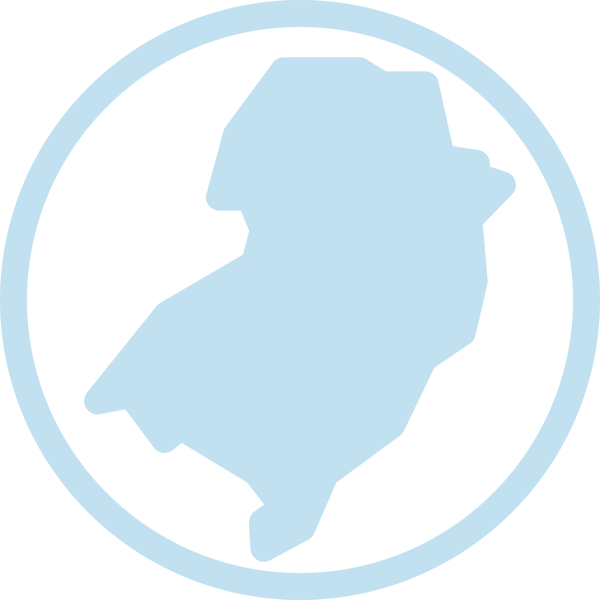
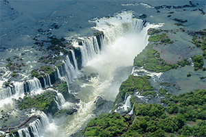
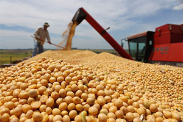

Região Sul
A Região Sul do Brasil é a menor das cinco regiões do país,[8] com área territorial de 576 774,31 km²,[4] sendo maior que a área da França metropolitana e menor que o estado brasileiro de Minas Gerais. Faz parte da Região Centro-Sul do Brasil.[9] Divide-se em três unidades federativas: Paraná, Santa Catarina e Rio Grande do Sul,[8] sendo limitada ao norte pelos estados de São Paulo e Mato Grosso do Sul, ao sul pelo Uruguai, a oeste pelo Paraguai e pela Argentina, além de ser banhada a leste pelas águas do Oceano Atlântico.[8] É única região brasileira localizada na porção sul abaixo da zona tropical, com as estações do ano variando nitidamente; contudo, a parte norte situa-se acima do Trópico de Capricórnio.[8] No inverno, ocorrem geadas e, com maior raridade, há queda de neve.[8] O relevo da Região Sul tem uma pequena quantidade de acidentes geográficos, predominando um grande planalto, geralmente, de pequena elevação.
Sua maior característica é o modo de colonização e o tipo de colonizadores recebidos.[11] A Região Sul começou a ser colonizada durante os séculos XVII e XVIII.[11] Em 1648, os portugueses foram os fundadores da vila de Paranaguá, a mais antiga cidade da Região Sul e do Paraná.[11] As populações alóctones recebidas pela região foram uma pequena quantidade de escravos africanos, porém, uma grande quantidade de imigrantes vieram do Uruguai, da Argentina, dos Açores, da Espanha, da Alemanha, da Itália, da Polônia, da Ucrânia, dos Países Baixos, entre outros.[11] A característica populacional dada pelos europeus que contribuíram para o processo de formação da sociedade brasileira do século XIX foi a predominante etnia caucasiana,[11] sendo deixadas na paisagem características dos países de onde originaram (casas, transportes, uso do solo). Os europeus foram os introdutores do sistema de pequenas e médias fazendas.[11] A ciência agrícola trazida da Europa para o Sul do Brasil foi a viticultura, adaptada à Serra Gaúcha.
A população das cidades da Região Sul cresceu muito nos anos mais recentes.[12] As cidades mais populosas são, em ordem de quantidade de moradores, Curitiba e Porto Alegre.[13] O desenvolvimento industrial foi iniciado nas décadas mais recentes principalmente no Rio Grande do Sul, nordeste de Santa Catarina e Região Metropolitana de Curitiba.[14] Na região de Criciúma, em Santa Catarina, estão localizadas quase a totalidade das reservas de exploração de carvão no Brasil.[15] O potencial energético, que as inúmeras cachoeiras dos rios das bacias hidrográficas do Paraná e do Uruguai representam, hoje se aproveita muito nas usinas hidrelétricas como a de Machadinho, próximo a Piratuba.
A Região Sul propriamente dita é um grande polo turístico, econômico e cultural, abrangendo grande influência europeia, principalmente de origem italiana[17] e germânica.[18] Apresenta índices sociais acima da média brasileira e das demais regiões em vários aspectos: possui o maior Índice de Desenvolvimento Humano (IDH) do Brasil, 0,798,[7] e o terceiro maior Produto Interno Bruto (PIB) per capita do país.[19] A região é também a mais alfabetizada, 95,2% da população, e a com menor incidência de pobreza.[20] Sua história é marcada pela grande imigração europeia,[21] pela Guerra dos Farrapos,[22] e pela Revolução Federalista,[23] com seu principal evento o Cerco da Lapa.[24] Outra revolta ocorrida na história da região foi a Guerra do Contestado,[25] entre os anos de 1912 e 1916.
História
Povos indígenas, chegada dos jesuítas e bandeirismo
O território da atual Região Sul do Brasil foi habitado originalmente pelos povos indígenas, principalmente os guaranis (mbyás),[40] os kaingangs[41] e os carijós.[42] Posteriormente, ocorreu a chegada dos padres espanhóis da Companhia de Jesus para a catequização dos indígenas.[43] Os padres jesuítas foram os fundadores de aldeias que chamavam-se missões ou reduções.[43] Os indígenas que passavam a sua vida nas missões eram criadores de gado, agricultores e aprendizes de ofícios.
Os bandeirantes da Capitania de São Paulo chegaram a atacar as missões jesuíticas para o aprisionamento dos indígenas.[43] Por essa razão, o local de residência dos jesuítas e dos indígenas foi abandonado.[43] Pouco a pouco, uma grande quantidade de paulistas foram se fixando à costa catarinense.[44] Os paulistas foram os fundadores dos municípios mais antigos do litoral, como Paranaguá, Florianópolis, Laguna e São Francisco do Sul.
Tropeirismo, conflitos territoriais e tratados internacionais
Os paulistas também estavam interessados no comércio do gado.[45] Durante a vinda dos tropeiros, ou seja, os que comercializavam gado, foi reunida a criação de gado livre pelos campos.[45] As mulas, os cavalos e o gado franqueiro foram levados para a venda nas feiras de gado em Sorocaba.[45] No trajeto de passagem dos tropeiros, ocorreu o surgimento de povoados.[45] Os tropeiros também foram os organizadores das primeiras estâncias, ou seja, propriedades onde se cria gado.[nota 1] Os tropeiros, que transportavam o gado muar para a Feira de Sorocaba, eram os primeiros devotos de Nossa Senhora das Brotas entre os séculos XVIII e XIX.
Para a defesa das estâncias que os tropeiros criaram, o rei de Portugal determinou a construção de fortes militares na região.[nota 2] Nos arredores dos fortes, ocorreu o surgimento de povoados.[47] Durante uma grande quantidade de anos, Portugal e Espanha guerrearam para se empossarem das terras do Sul.[48] As brigas foram continuadas e somente foram solucionadas com os tratados assinados.[49] Esses tratados foram os acordos determinantes dos limites das terras que localizam-se no sul do Brasil.
Chegada dos imigrantes, povoamento recente e desenvolvimento agropecuário
O crescimento populacional foi grande depois que os imigrantes chegaram da Europa.[50] Os primeiros imigrantes vieram dos Açores.[nota 3] Após a imigração açoriana em Santa Catarina e no Rio Grande do Sul, ocorreu a chegada em principal de imigrantes da Alemanha (1824, São Leopoldo, Rio Grande do Sul)[nota 4] e da Itália.[nota 5] Demais agrupamentos buscavam a região para passar a sua vida.[51] Os imigrantes foram os fundadores de colônias transformadas em cidades de importância como, por exemplo, Caxias do Sul.
Os solos de terra roxa do norte do Paraná e do oeste de Santa Catarina foram as regiões de povoamento mais recente.[53][54] O povoamento do norte do Paraná apareceu depois que foram criadas colônias agrícolas.[55] Migrantes de demais unidades federativas e de mais de 40 nações estrangeiras chegaram na região para serem colonos trabalhadores no cultivo de café e de cereais.[56] No oeste de Santa Catarina, foi desenvolvida a pecuária, além de serem exploradas a erva-mate e a madeira.
Turismo
O Parque Nacional do Iguaçu, onde se localizam as Cataratas do Iguaçu, é uma Unidade de Conservação brasileira. Está localizado no extremo-oeste do estado do Paraná, tendo sido criado em 10 de janeiro de 1939, através do decreto lei nº 1.035. Sua área total é de 185.262,2 hectares. Em 1986 recebeu o título, concedido pela UNESCO, de Patrimônio Mundial.
Durante os dias quentes de verão, as praias catarinenses são procuradas e frequentadas por turistas do Brasil inteiro e de outros países estrangeiros. Florianópolis, atrás apenas das cidades do Rio de Janeiro (RJ) e Salvador (BA), é uma das capitais brasileiras mais visitadas. Com o fim da crise econômica nos países do Mercosul, parte do movimento de argentinos, uruguaios e paraguaios voltou ao proveito do turismo de verão, em cidades balneárias tais como Balneário Camboriú e Barra Velha. São pontos turísticos os patrimônios da humanidade: Cataratas do Iguaçu no Parque Nacional do Iguaçu, no Paraná e as Ruínas Jesuítico-Guaranis de São Miguel das Missões, no Rio Grande do Sul.
As serras gaúcha e catarinense atraem turistas no inverno rigoroso, que aproveitam as temperaturas mais baixas e a neve, em cidades como Gramado (RS), a cidade turística mais representativa do gênero no país, Canela (RS) e Urubici (SC).
Em Cambará do Sul (RS), localiza-se o Parque Nacional de Aparados da Serra, onde fica o cânion do Itaimbezinho.
Economia
No que se refere aos aspectos econômicos da região Sul, a melhor maneira de explicar a distribuição das atividades primárias, secundárias e terciárias é elaborando análises desses três setores econômicos por partes e separadamente, observando cada uma delas.
A existência de extensas áreas de pastagens naturais favoreceu o desenvolvimento da pecuária extensiva de corte na região Sul. Há o predomínio da grande propriedade e o regime de exploração direta, já que a criação é extensiva, exigindo poucos trabalhadores, o que explica o fato de haver uma população rural muito pouco numerosa na região.
Devido à ampliação do mercado consumidor local e extra-regional e ao surgimento de frigoríficos na região, em certas áreas já ocorre uma criação mais aprimorada, pecuária leiteira e lavouras comerciais com técnicas modernas, destacando-se o cultivo do arroz, do trigo e da batata.
A agricultura, que é desenvolvida em áreas florestais, com predomínio da pequena propriedade e do trabalho familiar, foi iniciada pelo europeus, sobretudo alemães, que predominaram na colonização do Sul. A policultura é a prática comum na região, às vezes com caráter comercial, sendo o feijão, a mandioca, o milho, o arroz, a batata, a abóbora, a soja, o trigo, as hortaliças e as frutas os produtos mais cultivados. Em algumas áreas, a produção rural está voltada para a indústria, como a cultura da uva para a fabricação de vinhos, a de tabaco para a indústria de cigarros, a de soja para a fabricação de óleos vegetais, à criação de porcos (associada à produção de milho) para abastecer os frigoríficos e o leite para abastecer as usinas de leite e fábricas de laticínios.
Diferente das regiões agrícolas "coloniais" é o norte do Paraná, que está relacionado com a economia do Sudeste, sendo uma área de transição entre São Paulo e o Sul. Seu povoamento está ligada à expansão da economia paulista.
O extrativismo vegetal é uma atividade de grande importância no Sul do Brasil e o fato de a mata das araucárias ser bastante aberta e relativamente homogênea facilita a sua exploração. As espécies preferidas são o pinheiro-do-paraná, a imbuia e o cedro, aproveitados em serrarias ou fábricas de papel e celulose. A erva-mate é outro produto importante do extrativismo vegetal no Sul, e já é cultivada em certas áreas.
A região Sul é pobre em recursos minerais, devido à sua estrutura geológica. Há ocorrência de cobre no Rio Grande do Sul e chumbo no Paraná, mas o principal produto é o carvão-de-pedra, cuja exploração concentra-se em Santa Catarina. É utilizado em usinas termelétricas locais e na siderurgia.
A região Sul é a segunda mais industrializada do país, vindo logo após o Sudeste. A principal característica da industrialização no Sul é o fato de as atividades comandarem a atividade industrial, onde se localizam indústrias siderúrgicas, químicas, de couros, de bebidas, de produtos alimentícios e têxteis. Já a industrialização de Curitiba, o maior parque industrial, é mais recente, destacando-se suas metalúrgicas, madeireiras, indústrias automobilísticas, peças, químicas, e fábricas de alimentos.
As demais cidades industriais da região são geralmente mono-industriais ou então abrigam dois gêneros de indústrias, como Caxias do Sul (bebidas e metalurgia), Pelotas (frigoríficos), Lages (madeiras), Londrina (alimentos) e Blumenau (têxtil). A exceção é Joinville (setores metal mecânico, químico, plástico, e de desenvolvimento de software), situada no Norte catarinense, e Chapecó no Oeste Catarinense (Seu parque industrial é diversificado, sendo que os setores que mais se destacam são: 8 Frigoríficos é a capital brasileira da agroindústria, o metalmecânico, produção de equipamentos para frigoríficos, plásticos e embalagens, transportes, móveis, bebidas, softwares e biotecnologia).
Fonte: Wikipedia, 2019.